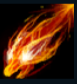

Shyvana

| Shyvana The Falf-Dragon | |
|---|---|
| Release date | 01.11.2011 |
| Class | Fighter |
| Positions | Jungle |
| Resource | Fury |
| Range type | Melee |
| Adaptive type | Physical |
| Base statistics | |||
| Health | 595 – 2210 | Resource | N/A |
| Health regen. | 7 – 19.75 |
Energy regen. | N/A |
| Armor | 38 – 70 | Attack damage | 52 – 99.6 |
| Magic resist. | 30 – 38.5 | Crit. damage | 175% |
| Move. speed | 350 | Attack range | 125 |
Shyvana este o ființă în inima căreia mocnește magia unui fragment de rună. Deși deseori ia formă omenească, se poate transforma oricând într-un dragon terifiant pentru a-și incinera inamicii cu suflarea dogoritoare. După ce i-a salvat viața lui Jarvan IV, prințul moștenitor al Demaciei, Shyvana s-a alăturat gărzii sale regale; cu toate astea, demacienii suspicioși încă nu o văd ca pe una de-a lor. | FURIA FIICEI DRAGONULUI Shyvana provoacă daune bonus dragonilor și primește armură și rezistență la magie. Cu fiecare dragon ucis de ea sau de aliații săi, Shyvana primește și mai multă armură și rezistență la magie bonus. |
|||
|---|---|---|---|---|
MUȘCĂTURĂ DUBLĂ Shyvana lovește de două ori la următorul atac. Atacurile de bază reduc timpul de reactivare al ''Mușcăturii duble'' cu 0,5 secunde. Formă de dragon: ''Mușcătura dublă'' spintecă toate unitățile din fața Shyvanei. |
||||
CERC DE FOC Shyvana se înconjoară cu flăcări, se mișcă mai repede timp de 3 secunde și le provoacă daune magice pe secundă inamicilor din apropiere. Cât timp ''Cercul de foc'' este activ, o parte din daune sunt provocate din nou atunci când Shyvana lovește un inamic cu un atac de bază. Viteza de mișcare scade progresiv pe durata vrăjii. Atacurile de bază cresc durata ''Cercului de foc''. Formă de dragon: crește dimensiunea ''Cercului de foc''. |
||||
|  |
SUFLARE DE FOC Shyvana lansează o minge de foc care le provoacă daune tuturor inamicilor loviți și lasă cenușă pe țintă, însemnând-o timp de 5 secunde. Atacurile de bază ale Shyvanei împotriva țintelor însemnate provoacă la impact daune echivalente cu o parte din viața lor maximă. Formă de dragon: ''Suflarea de foc'' explodează la impact sau în locația-țintă, provocând daune magice bonus și pârjolind pământul pentru scurt timp. |
|||
COBORÂREA DRAGONULUI Shyvana se transformă în dragon și zboară spre o locație-țintă. Inamicii din calea ei suferă daune și sunt împinși spre locația ei țintă. Shyvana câștigă în mod pasiv ''Furie'' pe secundă și câștigă 2 ''Furie'' la fiecare atac de bază. |